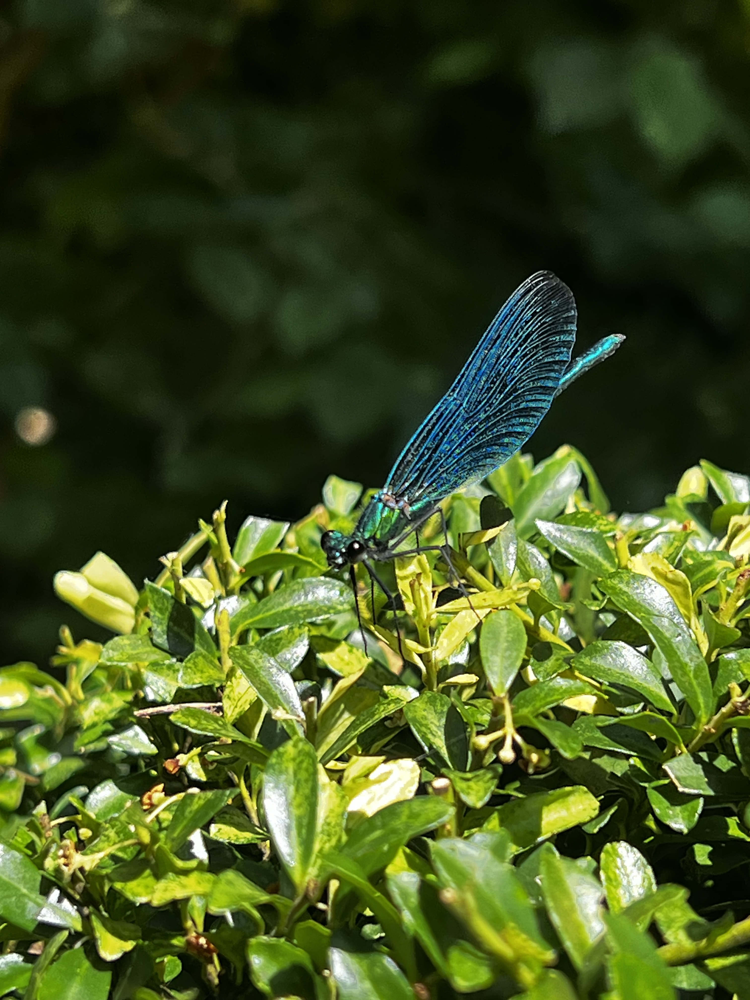

Photography
The following pictures are some examples of both my portrait and landscape photos, both edited and un-edited. I have also included some more abstract photos of mine.


These top two images are from a holiday trip i took in the Lake District. I took many picrures on this holiday but these two are my favourite form the trip.
